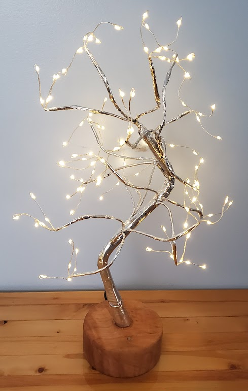
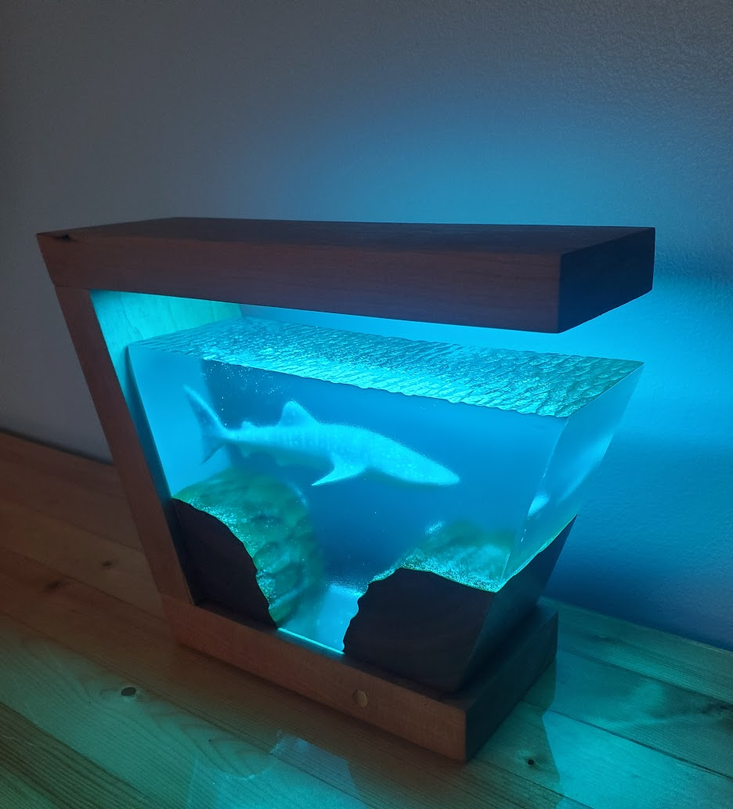
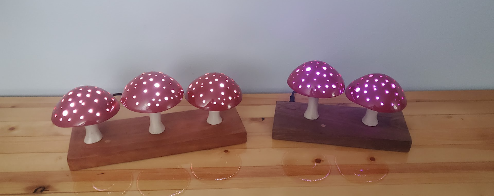
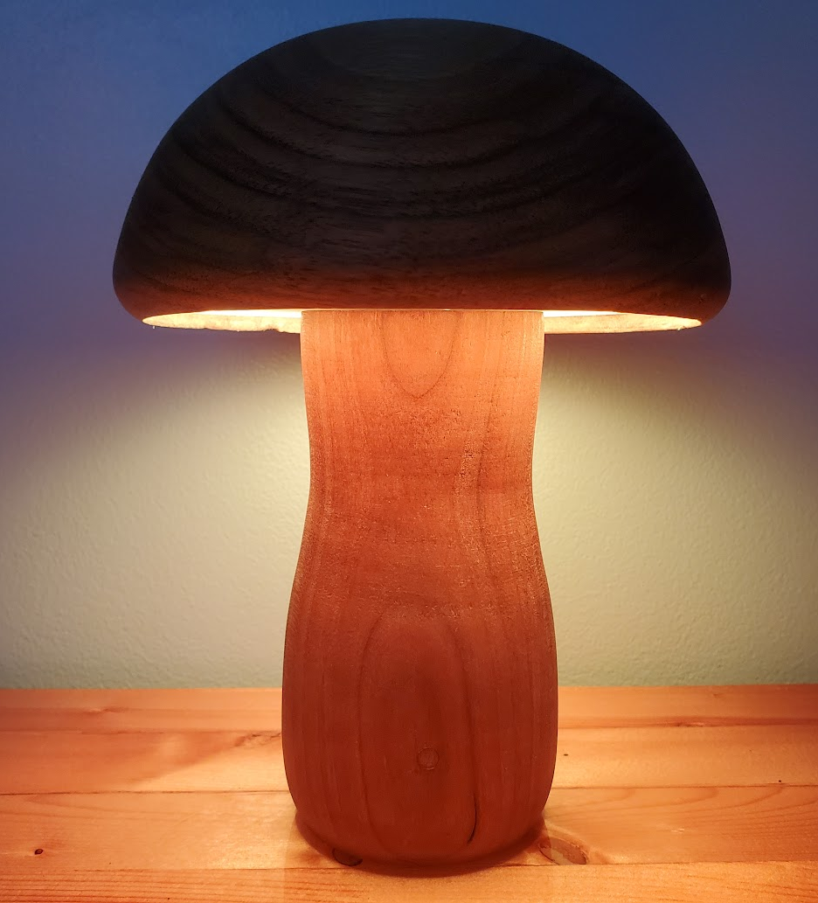
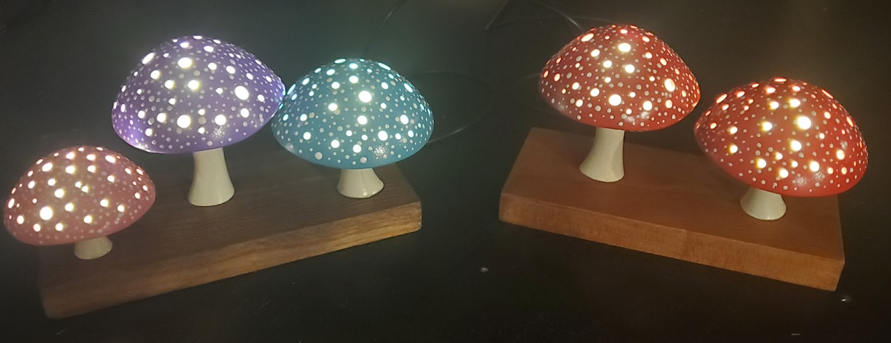
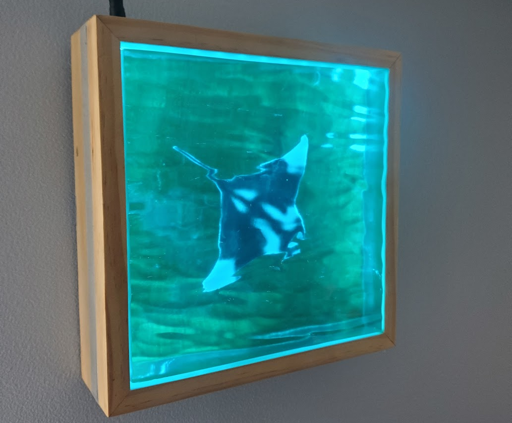
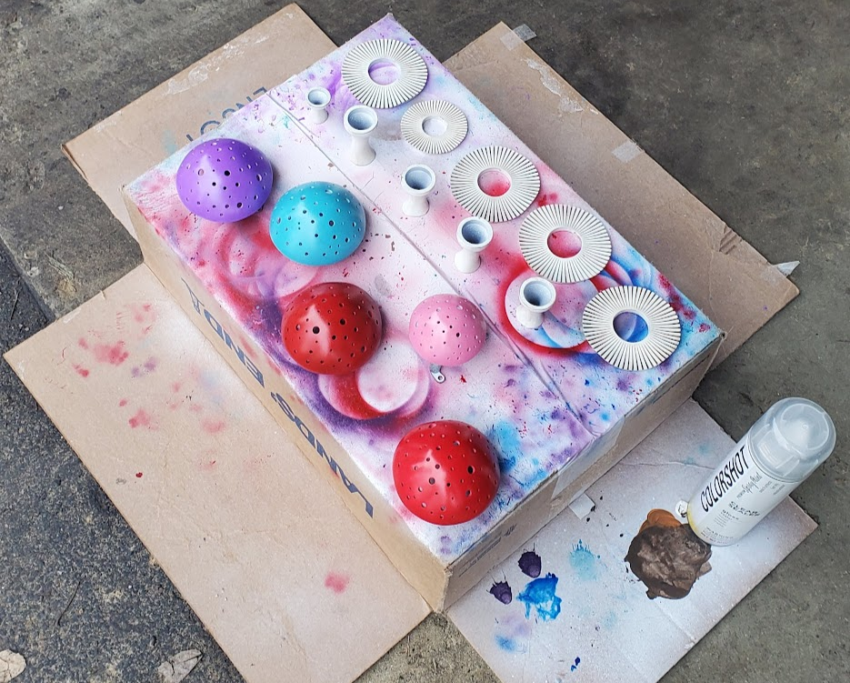

There are several different lights on this page. I made the mushroom
light by lathing down a chunk of cherry for the base and walnut for the
top. I embedded the electronics in the base, with the lights around the
top covered by an acrylic sheet. There is also a brass pin connected to
a touch sensor to give more physical control to the lamp.
Both the jellyfish light at the front of this page and tree light are
lights that I purchased but that I then upgraded. I added touch sensors
and smart capability to both of them and to the tree light I added a
maple base that better enhanced the light.
The mushroom
lights have had two iterations. I 3D modeled them in Fusion 360 and 3D
printed them out of resin. The first ones that I made had one non-color
changing LED in each mushroom, without any smart capabilities. In the
second design, I modified the model to accommodate for 7 individually
addressable LEDS. These were driven by an ESP32 which allowed for
wireless data transfer. I was easily able to integrate these into my
home assistant.
To make all these lights automated I hosted
an instance of home assistant on a raspberry pi that would let me
control the status, color, and brightness of the lights. It also allowed
me to make them voice activated and include routines. I am currently
moving the lights off this system and creating a universal remote that
includes all these features so that I am not limited to Wi-Fi.





